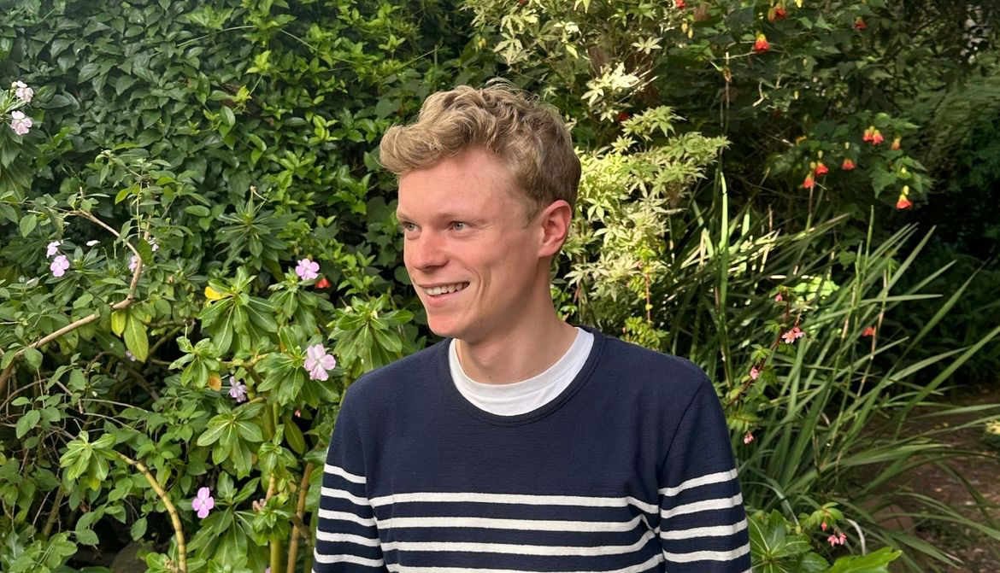

Clotaire Boyer
Welcome to my academic and personal website. I share my research work, publications, and professional activities here.

Welcome to my academic and personal website. I share my research work, publications, and professional activities here.
I am a PhD student in Economics at the University of California, Berkeley. In Summer 2025, I will be visiting Sciences Po’s Department of Economics—feel free to reach out! My research interests lie at the intersection of Public Finance and Development Economics, with a particular focus on state capacity and social protection in low- and middle-income countries. Methodologically, my work integrates approaches from Spatial Economics and Trade, Political Economy, and Economic History. Alongside my doctoral studies, I serve as a consultant economist for the World Bank, advising the Mongolian government on the design and targeting of social safety nets and developing methods to track poverty in real-time. Previously, I was a Research Associate at the Massachusetts Institute of Technology under Professors Benjamin Olken and Rema Hanna (Harvard), evaluating large-scale randomized programs on financial inclusion and poverty alleviation in Indonesia. I hold bachelor's degrees in Economics from UC Berkeley, Mathematics from Paris 1 Panthéon-Sorbonne, and Politics from Sciences Po.